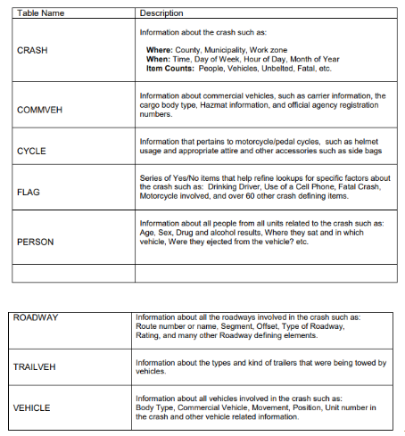
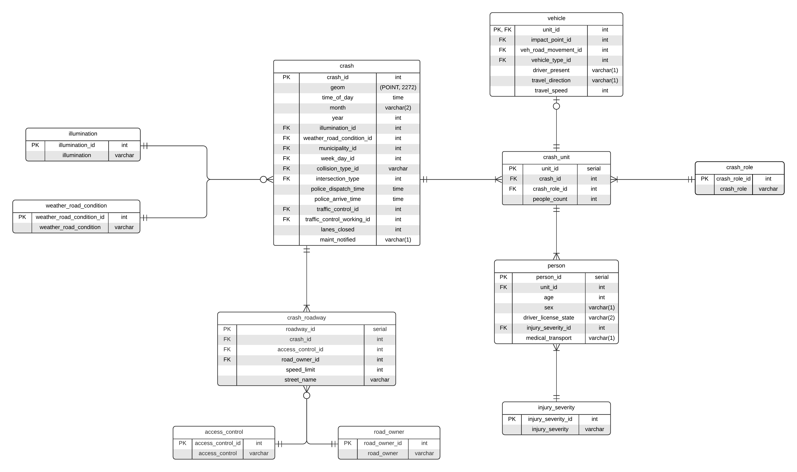
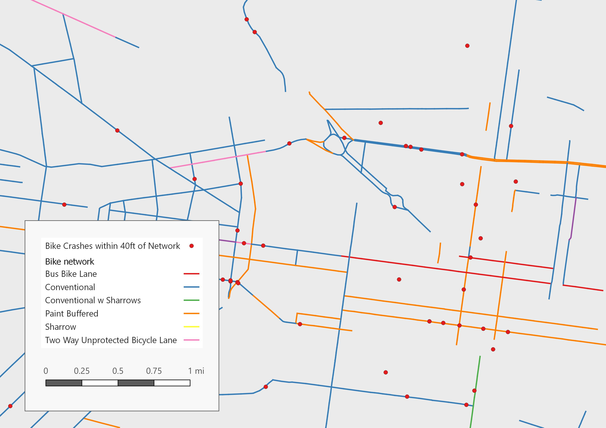
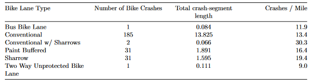

Spatial Database: Car Crashes in Pennsylvania
Using 2019 car crash data from the Pennsylvania Department of Transportation (PennDOT), I wrote PostgreSQL scripts (link?) for loading the initial data into a spatial database, schema normalization, and running spatial analytical queries using PostGIS.
The initial PennDOT data consisted of 8 tables containing various information about each crash that occurred:
I created a normalized schema by significantly restructuring these tables, including renaming fields, moving them between tables, and changing the key relations between the tables. For the sake of efficiency, I eliminated parts of the tables that were not relevant to the analytical queries I was interested in.
Here is a diagram of the normalized schema:
I ran several spatial analytical queries with this database. The first query used an additional PennDOT data set containing billboards and was designed to investigate the frequency of crashes near billboards on highways. The query measured the density of crashes per square mile within concentric distances near billboards, up to 1000 feet. The results of the query show a greater crash density closer to billboards; these results suggest that billboards may cause crashes by distracting drivers.
The second query used an additional data set: the bike network in Philadelphia. This query measured the crash density (crashes per mile of road) of crashes involving a bicycle occurring within 40 feet of the bike network, organized by different bike lane types. Roads with sharrows (road markings indicating a shared lane for bicycles and cars) had the highest crash density, suggesting that sharrows may be more dangerous for bicyclists than other bike lane types.
 